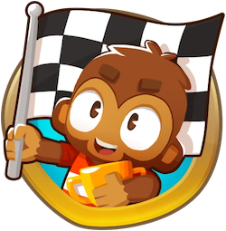

Paragon Stats
Get detailed stats about every Paragon in Bloons TD 6 such as damage or pierce. Choose a Degree, or use the Degree Calculator to input all important information to calculate your Paragon's degree ahead of time.
Custom Map Finder
Find any verified custom map in Bloons TD 6 by its map code and get the map image along with relevant stats about the map.

Recent Boss Events
Look at the latest boss events' details and ranked leaderboards for normal and elite, sometimes including events that haven't appeared in-game yet.

Recent Race Events
Look at the latest race events' details and leaderboards, sometimes including events that haven't appeared in-game yet.